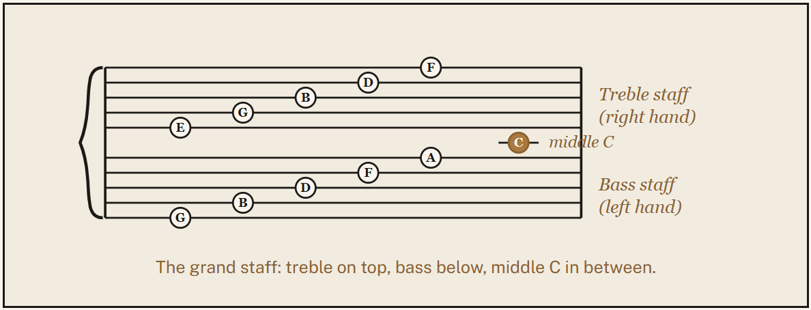

Lesson two
Naming the notes
Once you can find every C, the rest of the keyboard falls into place using seven letter names, repeated in order: A, B, C, D, E, F, G.
White keys, one octave from middle C
Middle C is the C nearest the center of the keyboard. From there, the white keys climb in order.
| Key | Note name | Position |
|---|---|---|
| 1st white key | C | Middle C |
| 2nd white key | D | Whole step up |
| 3rd white key | E | Whole step up |
| 4th white key | F | Half step up |
| 5th white key | G | Whole step up |
| 6th white key | A | Whole step up |
| 7th white key | B | Whole step up |
| 8th white key | C | One octave above middle C |
Black keys: sharps and flats
Each black key has two names, depending on which direction you approach it from.
Sharp (♯)
Raises a note by a half step. The black key right after D is D♯.
Flat (♭)
Lowers a note by a half step. That same black key is also E♭.
Reading the staff
Piano music uses two staves joined by a brace. The treble staff (right hand) uses the mnemonic "Every Good Bird Does Fly" for its lines. The bass staff (left hand) uses "Good Boys Do Fine Always." Middle C sits on the short line between the two staves.
